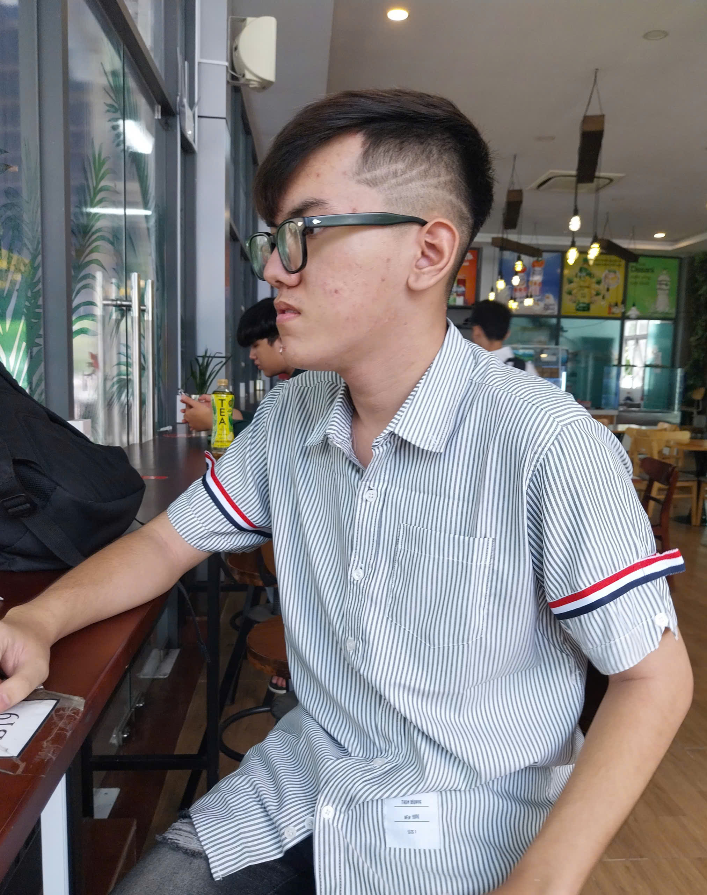

Trang cá nhân của Đạt
Chào mừng bạn đến với trang cá nhân của tôi!
Giới thiệu
Tôi là Lê Vĩnh Đạt, sinh năm 2005.
Tôi sinh ra ở An Giang, hiện tại tôi đang sinh sống và học tập tại TP.HCM.
Tôi là một người đam mê công nghệ thông tin và lập trình web.
Tôi đặc biệt yêu thích phát triển giao diện web (Frontend) và đang từng bước xây dựng các sản phẩm thực tế bằng HTML, CSS và JavaScript
Sở thích
Tôi có nhiều sở thích khác nhau, bao gồm:
- Tìm hiểu về công nghệ, đặc biệt là lập trình web.
- Thích nghe nhạc, đặc biệt là nhạc EDM và Pop.
- Tôi thỉnh thoảng chơi game, đặc biệt là các game chiến thuật và nhập vai.
- Tôi thích khám phá những điều mới mẻ và học hỏi từ những người xung quanh.
Tính cách
Tôi là một người thân thiện, hòa đồng và luôn sẵn sàng giúp đỡ người khác.
Tôi có tính kiên nhẫn và luôn cố gắng hoàn thiện bản thân.
Tôi thích làm việc nhóm và tin rằng sự hợp tác sẽ mang lại kết quả tốt hơn.
Học vấn
Tôi là sinh viên năm thứ 2 hiện đang theo học tại Đại học Nguyễn Tất Thành, chuyên ngành Kỹ thuật phần mềm.
Tôi đã hoàn thành chương trình học phổ thông tại trường Trường THPT Tân Phong.
Tôi luôn cố gắng học hỏi và nâng cao kiến thức của mình trong lĩnh vực công nghệ thông tin.
Kỹ năng
Tôi là một lập trình viên đam mê về web
Tôi đang từng bước học hỏi và có nền tảng cơ bản về lập trình web.
Một số ngôn ngữ lập trình về web:
- HTML, CSS, JavaScript
- React, Vue.js
- Node.js, Express
Mạng xã hội
Dưới đây là một số mạng xã hội của Đạt:


Thông tin liên hệ
- Email: ldat7174@gmail.com
- Điện thoại: 0372382267
- Địa chỉ: Tân Thuận, TPHCM